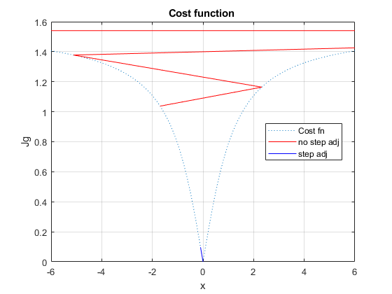

Contents
set 4, prob 6
clear; clc
z = 0;
% First guess
xg0_OG = 1.5 ;
xg0 = xg0_OG ;
GN method
% no step size adjustment a_flag = 0; [xg0_a0, Jg_a0] = GN(a_flag, xg0, z); % step size adjustment a_flag = 1; [xg0_a1, Jg_a1] = GN(a_flag, xg0, z); % original initial guess xg0_OG % solution to initial guess xg0_a1(end) % covariance [~, ~, H, ~] = cost_fn(xg0_a1(end), z); Pxx = inv(H' * H) clear Jg x = [-6 : 0.1 : 6]; for i = 1:length(x) Jg(i) = cost_fn( x(i), z); end
xg0_OG =
1.5
ans =
-1.49877953906259e-10
Pxx =
1
cost function plot
The cost trajectory without step size adjustment begins to diverge immediately. The cost function (norm of the difference between the measurement, z, and the measurement model, h(x) = atan(x)) asymptotically reaches its max value after just 5 iterations. The step-size adjusted method achives the converged solution after just 3 iterations (of the outer loop). The crude step-size adjustment is sufficient to avoid divergence of the Gauss-Newton algorithm. To choose the step size adjustment more nearly optimally, one can take the derivative of the cost function with respect to a (the step size adjustment variable) and solve for a.
ftitle = 'Cost function '; figure('name', ftitle) plot(x, Jg, ':'); hold on; grid on; plot(xg0_a0(1:5), Jg_a0(1:5), 'r'); plot(xg0_a1, Jg_a1, 'b'); legend('Cost fn', 'no step adj', 'step adj', 'location', 'best') xlim([-6 6]) xlabel('x'); ylabel('Jg'); title(ftitle);
subfunctions
function h = h_NL(x) % Nonlinear measurement h h = atan(x); end function H = H_NL(x) % Full jacobian of h % H = (sec(x)).^2; H = 1 / (1 + x^2); end function [Jg, h, H, dx] = cost_fn(xg, z) % NL at guess h = h_NL(xg); % jacobian at guess H = H_NL(xg); % Cost function Jg = norm(z - h); % Gauss-Newton dx dx = inv((H' * H)) * H' * (z - h); end function [xg0_i, Jg_i] = GN(a_flag, xg0, z)
First cost function and step size-adjusted cost function
% First NL, jacobian, and cost fn at guess [Jg, h, H, dx] = cost_fn(xg0, z); % first a step a = 1; % First new cost function xg = xg0 + a * dx; % First new NL, jacobian, and cost fn at guess [Jgnew, h, H, ~] = cost_fn(xg, z);
The while loop
i_dx = 0;
i_Jg = 0;
Jg_i = [];
xg0_i = [];
% Outer loop: norm(dx) > e
while norm(dx) > 0.000001
if a_flag == 1
% Inner loop: Jgnew >= Jg
while Jgnew >= Jg
% Next a
a = a/2;
if a < eps
break
end
% Adjust step size and update cost fn
xg = xg0 + a * dx;
[Jgnew, h, H, ~] = cost_fn(xg, z);
% increase inner loop count
i_Jg = i_Jg + 1;
end
end
% Back to outer loop: norm(idx) > e
if a < eps
break
end
% Next guess point
xg0 = xg;
Jg = Jgnew;
% Gauss-Newton dx (H, z, and h saved from last iteration)
dx = inv((H' * H)) * H' * (z - h);
% first a step
a = 1;
% Next step-size adjusted guess
xg = xg0 + a * dx;
[Jgnew, h, H, ~] = cost_fn(xg, z);
% Increase outer loop count and populate Jg, xg0 trajectory
i_dx = i_dx + 1;
Jg_i = [Jg_i; Jg];
xg0_i = [xg0_i; xg0];
end
Warning: Matrix is singular to working precision. Warning: Matrix is singular to working precision. Warning: Matrix is singular to working precision. Warning: Matrix is singular to working precision. Warning: Matrix is singular to working precision.
end